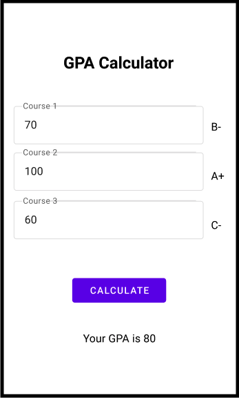
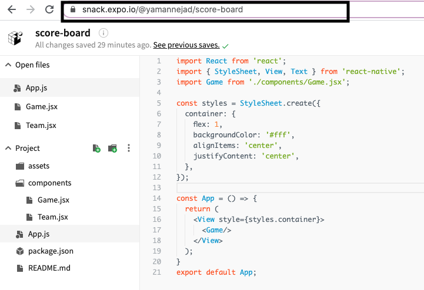

In this activity, you will practice your react native knowledge by creating a single screen mobile application. You will create your mobile application and store your code in your Github repository and also on Expo snack.
Submission format - You will work individually on this task and 1) include your code in your github repository. You will invite your instructor to your github repository to review your work. 2) And also, you will create an Expo snack and add your code. You will submit the link of your snack in BlackBoard.
Estimated time: 2 hours
Submission deadline: Oct. 21


Well done, you finished your exercise. Here is the marking criteria that will be used for this activity.
Item | Weight |
Functionality of the code (works correctly and does not crash with user inputs) | 30 % |
Code quality (Clean code, modular and component based design) | 30 % |
Quality of the repository (proper use of commits, workflow) | 20 % |
The quality of the UI design(clean UI, easy to use) | 10 % |
Submission with Snack | 10 % |